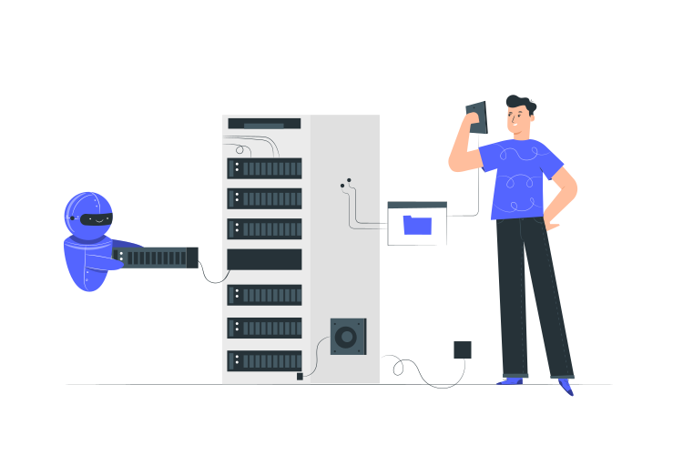
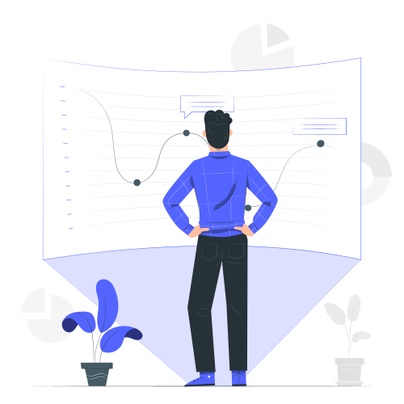

توضیح وب سایت Decortian

در این پست قرار است که بیایم و سایت Decortina رو با هم دیگه بررسی کنیم مثلا با چه تکنولوژی هایی کد زنی شده و حدف از ساخت اون چیه قبل از هرچیزی باید بگویم که این پروژه چند ماهی هست که متوقف شده و به زودی دوباره شروع میکنم به توسعه ی آن . وب سایت Decortian یک فروشگاه چند منظوره هست که شما میتوانید کالا های خود را مثل : قالب ووردپرس , افزونه های ووردپرس , فروش آموزش های خودتون مثل برنامه نویسی یا فتوشاپ یا ... را به فروش برسانید.
تکنولوژی های استفاده شده
در این پروژه بک اند (API) با استفاده از asp.net 5 کد نویسی شده و با استفاده از الگوی MVC در این پروژه ما سه لایه دارم با نام های App , Data , Core در لایه ی Data دیتا بیس و جدول های پروژه رو با استفاده از روش Code First تعریف شده است و این لایه تنها و تنها وظیفه ی آن مدیریت Database بوده همچنین بانک اطلاعاتی آن هم SQL server هست . لایه ی Core هم تنها و تنها وظیفه ی کوئری روی بانک و پردازش اطلاعات را دارد و چند نکته ی امنیت که در این لایه پوشش داده شده . در لایه ی App هم Controller ها تعریف شده که اطلاعات از لایه Core دریافت می کند و به اپلیکیشن میفرستد . سعی شده که اصلا بقیه ی لایه ها را درگیر منطق و شرط ها نکنیم تا بهترین نتیجه را بگیریم و بیشتر شرط ها در لایه ی App تعریف شده . برای احراز هویت هم از سیستم قدرتمند Identity استفاده کردیم تا بهترین نتیجه و با امنیت بالا را دریافت کنیم .
همانطور که گفته شد بک اند سایت Decortina یک API هست پس عادیه که از تکنولوژی هایی استفاده کنیم در فرانت که به صورت SPA هستند مثل انگیولار یا ویو یا ری اکت که در این پروژه قرار است که فرانت کار با استفاده از ری اکت پیاده سازی بشه و طبق صحبت هایی که شده قرار است که فرانت کار رو هم من خودم اجرایی کنم البته هنوز بخش فرانت شروع نشده حدف ما از استفاده از ری اکت این بوده این تکنولوژی سرعت فوق العاده بالایی دارد به دلیل اینکه سایت شما به Single Page Application اجرا میشه این به معنای این هست که کاربر وقتی که در سایت شما در بین صفحات گشت زنی میکند مرورگر اصلا رفرش (بارگیری) نمیشود و این واقعا عالیه . این به دلیل این است که از تکنولوژی ای به نام ajax استفاده میکند